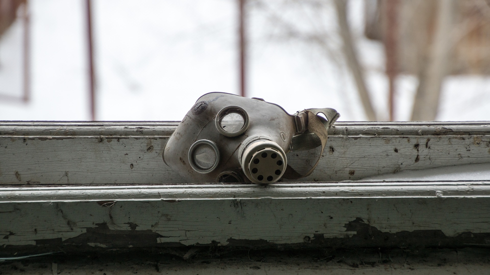

History of Chernobyl Exclusion Zone
Its official name was the the V.I Lenin Nuclear Power Station and it was constructed between 1972 and 1977. The power plant consisted of four nuclear reactors (two additional reactors were planned) and was the pride of the Soviet Union, a demonstration of its ability to create a world class nuclear facility. All four reactors were completed at different stages; Reactor 1 in 1977, Reactor 2 in 1978, Reactor 3 in 1981, and Reactor 4 in 1983. This meant that Reactor 4 was only in operation for three years before the explosion in 1986.
The Chernobyl Disaster
 In the early hours of Saturday 26 April 1986, an experiment to test the cooling of the reactor core during an emergency situation took place. During the course of the experiment, a massive power spike occurred which led to the overheating of the reactor core and resulted in the initial explosion.
Damage Caused
The accident destroyed the Chernobyl 4 reactor, killing 30 operators and firemen within three months and several further deaths later. One person was killed immediately and a second died in hospital soon after as a result of injuries received. Another person is reported to have died at the time from a coronary thrombosis. Acute radiation syndrome (ARS) was originally diagnosed in 237 people onsite and involved with the clean-up and it was later confirmed in 134 cases. Of these, 28 people died as a result of ARS within a few weeks of the accident. Between March 1990 and June 1991, a total of 50 field missions were conducted by 200 experts from 25 countries (including the USSR), seven organisations, and 11 laboratories3. In the absence of pre-1986 data, it compared a control population with those exposed to radiation. Significant health disorders were evident in both control and exposed groups, but, at that stage, none was radiation related. Conifers in about 10 square kilometres of forest close to the plant were killed by the high radiation levels, but regeneration got underway from the following year. The net environmental effect of the accident has been much greater biodiversity and abundance of species. The exclusion zone has become a unique sanctuary for wildlife.
Chernobyl Today
Chernobyl unit 4 was enclosed in a large concrete shelter which was erected quickly (by October 1986) to allow continuing operation of the other reactors at the plant. However, the structure is neither strong nor durable. The New Safe Confinement (NSC) structure was completed in 2017, having been built adjacent and then moved into place on rails. It is an arch 110 metres high, 165 metres long and spanning 260 metres, covering both unit 4 and the hastily-built 1986 structure. The hermetically sealed building will allow engineers to remotely dismantle the 1986 structure that has shielded the remains of the reactor from the weather since the weeks after the accident. It will enable the eventual removal of the fuel-containing materials (FCM) in the bottom of the reactor building and accommodate their characterisation, compaction, and packing for disposal.